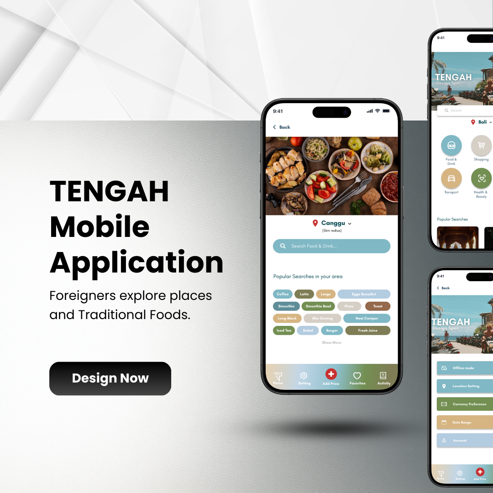
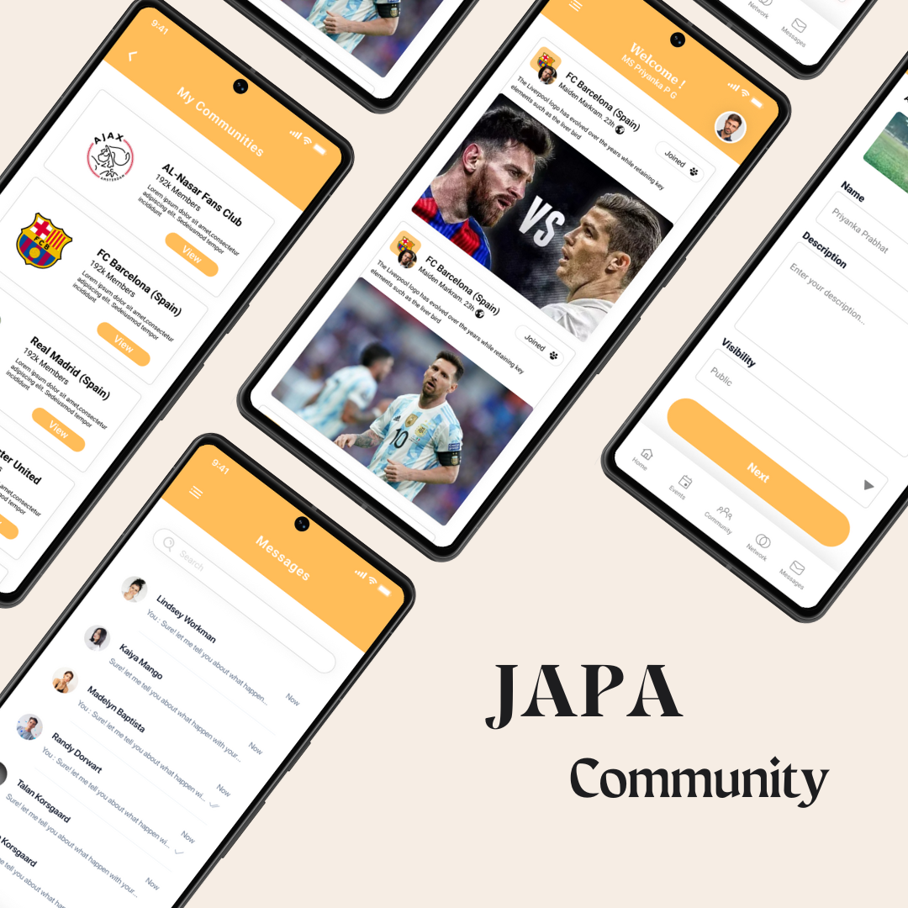

Hi, I'm Zimam Jaufer.
I design products
people actually enjoy using.
UX/UI Designer with 3+ years of experience creating intuitive, user-centered digital products. I combine UX research, UI design, and design thinking to craft seamless web and mobile experiences that solve real user problems and drive business success.
Trusted by teams at
About
Design is a way of listening.
I am a UI/UX Designer with 3+ years of hands-on experience building user-centered digital products for web and mobile platforms.
With a background in Software Engineering, I bridge the gap between design, technology, and user experience, enabling me to create solutions that are not only visually engaging but also technically feasible and scalable. My focus is on delivering meaningful experiences that align user needs with business goals through research-driven and innovation-led design.
My expertise spans the full product design lifecycle, including user research, UX strategy, competitor analysis, information architecture, wireframing, prototyping, and high-fidelity UI design. I strongly believe in continuous iteration and data-informed design decisions to improve usability and product impact.
I also actively explore AI-powered design tools and workflows to enhance creativity, speed up ideation, and develop more innovative and efficient design solutions.
Tools & Craft
Focus Areas
- UX Research
- UI Design
- Design Systems
- Prototyping
- Product Strategy
Selected Work
A few products I've shaped end to end.

TENGAH
Designed a mobile app to help foreigners in Tengah easily find local food, services, and daily essentials with an intuitive and location-based interface.
View case study →
JAPA
Designed a social community app that enables expatriates to discover local communities, join interest-based groups, and build meaningful connections through a seamless and engaging user experience.
View case study →How I Work
Four steps, every project.
Discover
Stakeholder interviews, user research, and competitive analysis to find the real problem, not just the stated one.
Define
Turning research into clear problem statements, flows, and success metrics the whole team can align around.
Design
Rapid wireframes to high-fidelity UI, tested with real users at every stage before a single line of code ships.
Deliver
Detailed handoff, design QA, and post-launch iteration based on real usage data — design doesn't stop at launch.
Experience
Where I've worked.
UX Designer · Upwork
Leading design for the patient mobile app and Web applications
UI/UX Designer · Elegant media
Designing user-centered dashboards, landing pages, and Mobile applications with Figma and Adobe XD. Focused on enhancing usability and aesthetics for clients across multiple industries; mentoring two junior designers.
UI/UX Designer · Fiverr
Designed web and mobile experiences for early-stage startups across health, travel, and Sports.
Kind Words
What people I've worked with say.
"The design perfectly captured our vision while making the shopping experience simple and enjoyable. Every screen feels intuitive, visually appealing, and focused on helping users find the right outfit quickly."
"The user experience was thoughtfully designed around real user needs. The interface is clean, easy to navigate, and makes it much simpler for newcomers to discover essential services in the area."
"The redesigned website is modern, accessible, and significantly easier to navigate. The focus on usability and responsive design created a much better experience for students, faculty, and visitors."
Contact
Got a product that needs shaping?
I'm currently open to freelance projects and full-time roles starting Q4. Reach out - I usually reply within a day.